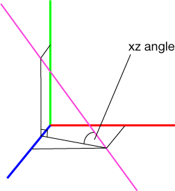

trim shape attribute
Synopsis
bool trim.{horizontal | vertical}
 The trim shape attribute consists of a two booleans. It is used to control the application of trim planes to the current shape and its successors. Classification of the trim planes depends on the orientation of the edge which was used to define the trim plane (i.e. the shared edge between two pre-component split faces): if the angle to the xz-plane of the pivot is less than 40 degrees, the trim plane is horizontal, otherwise vertical.
The trim shape attribute consists of a two booleans. It is used to control the application of trim planes to the current shape and its successors. Classification of the trim planes depends on the orientation of the edge which was used to define the trim plane (i.e. the shared edge between two pre-component split faces): if the angle to the xz-plane of the pivot is less than 40 degrees, the trim plane is horizontal, otherwise vertical.

Classification of a trim planes depends on the angle between the ''generating'' edge (pink) and the xz plane of the pivot.
Set the attribute to enable or disable the trim planes in horizontal or vertical direction.
Note: horizontal trim planes are disabled by default. To enable them, use
set(trim.horizontal, true).
Related
Copyright ©2008-2015 Esri R&D Center Zurich. All rights reserved.